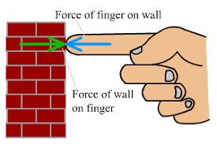
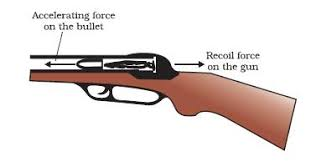
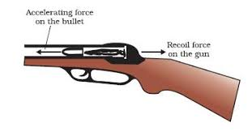

Newton's Third Law
Newton's Third Law states that "Every Action has an Equal and Opposite Reaction"
Lets break this down. An action refers to an application of force. If you push a ball, that is an action. When gravity pulls down a skydiver, that is an action. The reaction is essentially the action, but with the objets reversed. If the action is you pushing a ball, the reaction is the ball pushing you.
Have you ever fired a gun? Even if not, you're likely aware that recoil exists. Newton's third law tells us why recoil exists. When the bullet leaves the chamber, you (through the gun) exerted a huge force on the bullet to get it to speed up to high speeds. The reaction is that the bullet exerted a force on you.
The reaction is "equal and opposite", because it is equal in magnitude to the action force, and opposite in direction. If you throw a ball with 15N of force, the ball throws you in the opposite direction with a force of 15N. Even if a bicyclist were to crash into a school bus, she would exert the same force on the bus as the bus exerts on her.

 

Question: What happens to a cannon in space when it's fired at various angles?
This interactive program illustrates Newton's Third Law of motion. Click on the window, then use the left and right keys to rotate the cannon. Click anywhere on screen to fire, and click reset to reset the simulation.
The cannon moves in the opposite direction of the bullet. You may be wondering, "Why do the objects move away from the original position at different speeds, if the same force acts on them?" The reason is because each object has a different mass. Due to Newton's Second Law, we know that the same force will cause a greater acceleration on a less massive object.
Practice Problems
1. When you jump, your action is exerting a force on the ground. What is the reaction force? What is the magnitude of the reaction force?
2. A small car crashes into a stationary semitruck. The semitruck is four times as massive as the small. If the small car applies a 15,000N force on the semitruck, what is the magnitude and direction of the force that the semitruck applies on the small car?
3. A massive football player body slams a small, unsuspecting man. The football player is twice as massive as the smaller man. How does the resultant acceleration of the football player compare to the man?
4. If a 50kg parachuter is free falling on earth, what is the force that the man exerts on the earth?
5. A baseball player swings at the baseball, and the ball accelerates away at 40 meters per second squared. What is the backwards acceleration of the bat? Assume the baseball weighs 145 grams, and the bat weights one kilogram.
Practice Answers
1.
Reaction force: "the ground exerting a force on you"
Magnitude: Equal to the magnitude of the force you exert on the ground
2.
15,000N
Newton's third law tells us that the reaction force is always equal to the action force.
3.
Half of that of the smaller man
The same force "F" will be applied to each person. If we take the football player's mass to be M, and the smaller man's mass to be M/2, then their respective accelerations are A, and 2A.
4.
490N
We want to know the force that the man exerts on the earth. Since the man is freefalling, we know that his acceleration is 9.8 meters per second squared. From Newton's Second Law, we know that the force the earth exerts on the man is equal to his mass times his acceleration, or 490N. Newton's Third Law tells us that the force the earth exerts on the man is equal to force the man exerts on the earth.
5.
5.8 meters per second squared
First, we want to find the acceleration of the bat, so first, we should find the force exerted on the bat. Newton's third law states that the force of the ball on the bat is the same as the force of the bat on the ball. Thus, we should find the force applied to the ball. Newton's second law tells us that this is equal to the mass of the baseball times its acceleration, or (.145) * 40 = 5.8N. Since 5.8 Newtons are applied to the ball, 5.8 Newtons are applied to the bat. Using Newton's second law, we can solve for the acceleration of the bat, since we have its mass and force.
Back to Newton's Laws